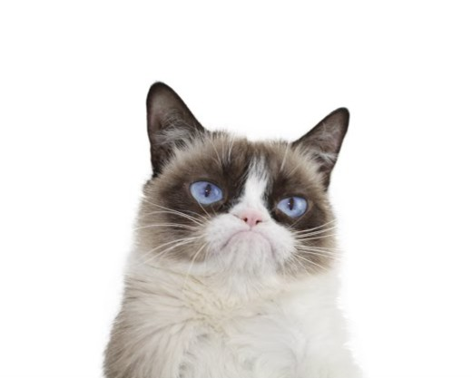

Blog Post
September 27, 2025 by Kira
Hi! My name is Kira, I’m someone who’s equal parts curious and creative and i love cats. I enjoy diving into new ideas, whether it’s through books, random late-night research rabbit holes, or experimenting with projects that may or may not work out (but hey, it’s always worth trying). I’m the kind of person who can go from geeking out about economics and tech one minute to binge-watching shows or debating which snack is superior the next. I like keeping things balanced—serious when I need to be, but always finding humor in life. Most importantly, I’m always learning, growing, and figuring it out as I go. I’ve learned that life isn’t a straight path — it’s more like a winding road with random detours that sometimes lead to the best views. That’s what excites me: the chance to discover new perspectives, connect dots between ideas that don’t seem related at first, and embrace the little “a-ha” moments along the way.
On any given day, you might find me with a notebook full of scribbles, chasing inspiration for a project, or curled up with a good series and a snack that I’ll probably overanalyze (yes, I take my snack debates very seriously). I love the mix of structure and spontaneity — the balance of setting goals while also leaving room for the unexpected.